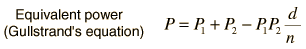
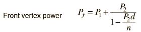
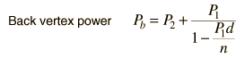

Front and Back Vertex Power  Once the equivalent power and the front and back vertex powers are obtained, the associated focal lengths can be found by just taking the reciprocals of the powers. Note that Gullstrand's equation can be used for either two lenses (with n=1) or two surfaces.
|
Index Lens concepts | ||
|
Go Back |